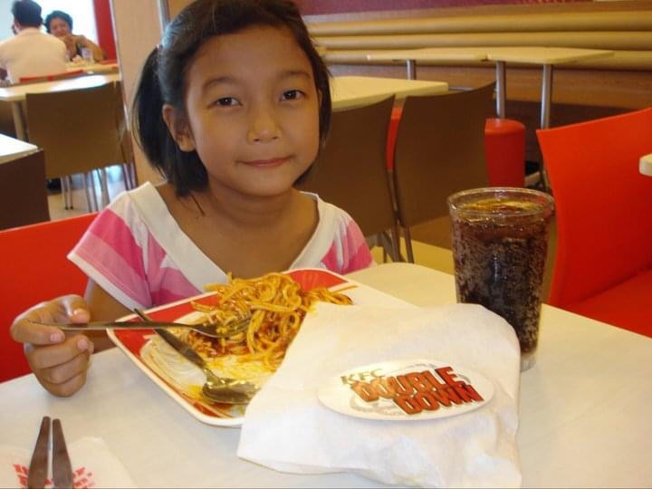

During my toddler years, my mother won't allow me to go outside during the rainy season, i felt envious everytime i see my childhood friend having fun playing in the rain, but still thankful and happy because i have a lot of friend.
Back to the main page